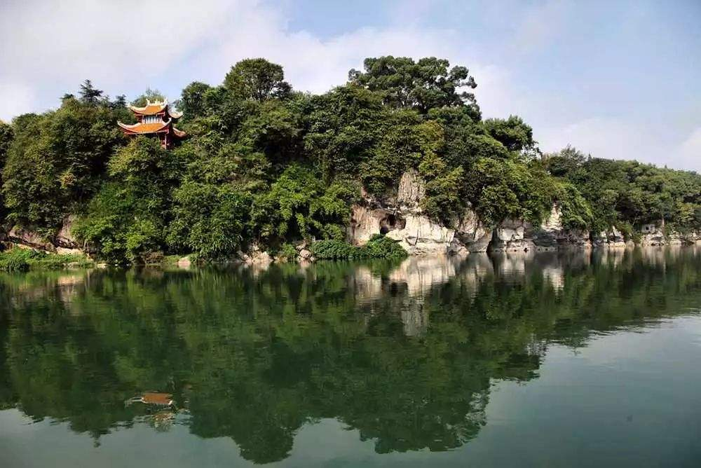
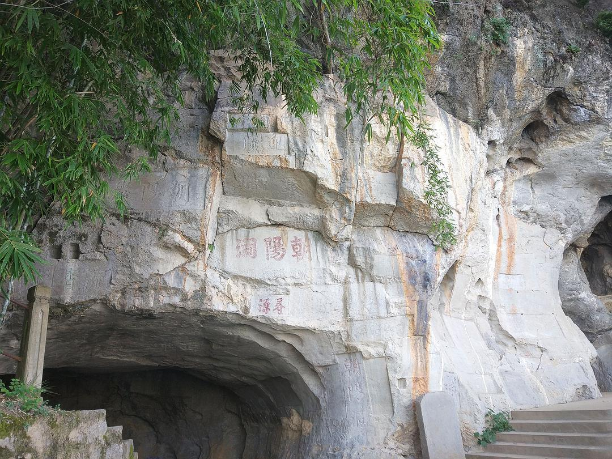
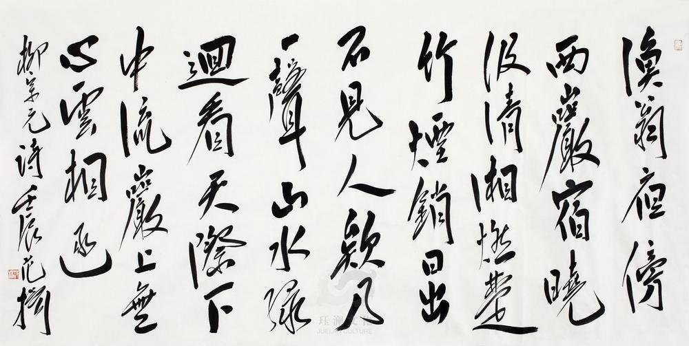
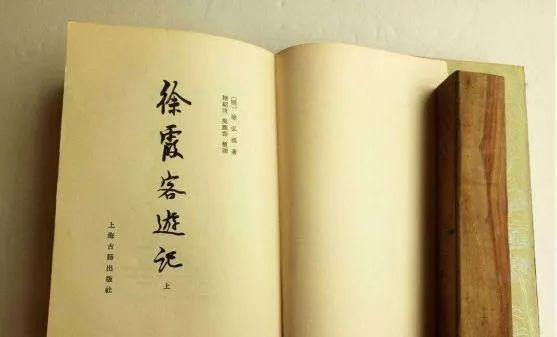

朝阳岩，又名西岩。位于永州城潇水西岸，因其山光水色，风景秀丽，古有“朝阳旭日”之称，为永州八景之一。朝阳岩，位于湖南科技学院东侧，市内13路公交尽头，朝阳公园内
朝阳岩铭------唐朝诗人元结任道州刺史时，系舟岩下，见岩石东向，洞口东开，遂命名为朝阳岩。又因爱其山水佳胜，为之作《朝阳岩铭》及《朝阳岩下歌》：“朝阳岩下湘水深，朝阳洞口寒泉清……零陵徒有先贤传。水石为娱安可羡，长歌一曲留相劝。”朝阳岩风光自此闻名。
柳宗元《渔翁》------柳宗元谪居永州10年间，常搜奇览胜，游岩赏景，赋诗述怀。他常到此地游赏，并题有《渔翁》《江雪》等诗。如今在岩左小岩口的石壁上还有他的《渔翁》诗的摹刻：“渔翁夜傍西岩宿，晓汲清湘燃楚竹。烟销日出不见人，欸乃一声山水绿。回看天际下中流，岩上无心云相逐。”
徐霞客游记-------朝阳岩水清深，洞深邃，岩奇崛，此乃朝阳岩之奇。明代地理学家、散文家徐霞客在他的游记中写道：“一山怒而竖石，奔与江斗。”朝阳岩依山傍水，这潇水，青绿如绸，是一曲“山水绿”的流动的歌；这洞口“九曲回香泉”，是一幅有声的画。这石洞清爽宜人又幽奇含蓄，三洞通幽，引人入静，令人思离尘世喧嚣，大发洞天福地之感慨。
